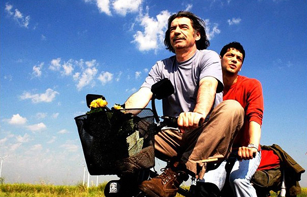

差点因为名字错过一部不错的片子。 英文名很长“The World Is Big and Salvation Lurks around the Corner”，中文译作《在世界转角遇见爱》。开始以为是模仿当初的那部日本电影《在世界中心呼唤爱》，很怀疑地想着简单看看，原来那个片就不是很喜欢。看了几分钟，便觉得这部保加利亚电影有我喜欢的气质，苦难却不渲染，灵动而温暖。 下双陆棋的爷爷，带车祸后失去父母失去记忆的外孙重回故里。那些不堪的，幸福的，痛苦的，温暖的记忆也被一一拾回。祖孙俩骑着双人自行车从德国长途跋涉回到保加利亚，高速路口的大牌子上写着“新生的保加利亚”。那一刻，所有的不堪与酸楚都在蓝天白云阳光下灰飞烟灭。 世事如棋，重要的不是扔出好骰子，不是拿到一手好棋，而是不管扔出什么，不管拿到什么样的棋，都能把每一步下成一盘好棋。因为Salvation Lurks around the corner, 大概用柳暗花明又一村来解释更贴切吧。